This Page is still under construction
The objective is this section is to help you get the best possible cat, explaining all the options available to you. This cat MUST have:
- Pink Quality(allows for max level)
- Usefull Skills for the role you intend it to have
- Max Level Armor Set
- Appropiate Stats Investments
Cat Lady Menu
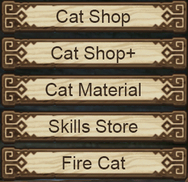- Cat Shop: for buying white cats (Options never change, skip this).
- Cat shop+: Chance for better quality cats (Changes daily, buy your pink cats here).
- Cat Material:
- Skills Store: Sells skill books for white and green cats. Since those type of cats are useless, this is useless too.
- Fire Cat: sets your cat on fire...I wish. After a lengthy animation meant to soften your heart, allows you get rid of unwanted cats.
Cat Quality:
- 白 - White (Normal)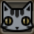
- 绿 - Green (Rare)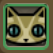
- 粉 - Pink (Rarer) => goes to level 50 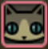
- 白 - White (Normal)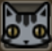
- 绿 - Green (Rare)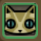
- 粉 - Pink (Rarer) => goes to level 50 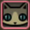
Since pink cats are the only cats that can get to lvl 50, the other cat qualities do not matter. Get a pink cat.
Your Cat Window
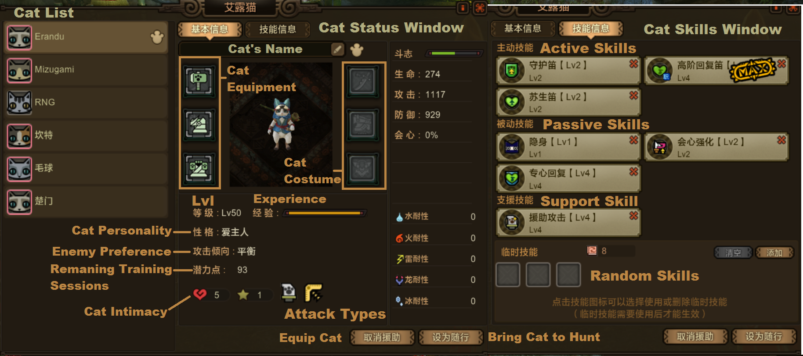
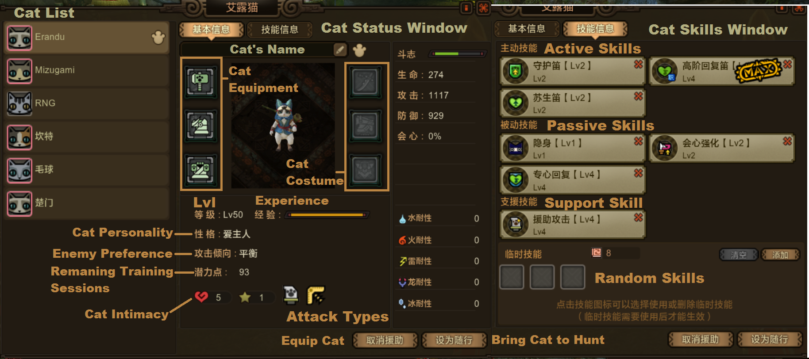
Enemy Preference:
- 专注大型 - Large Monsters only
- 专注小型 - Small Monsters only
- 大型优先 - Prioritize Large Monsters
- 小型优先 - Prioritize Small Monsters
- 平衡 - Balanced
*While priotize small monsters would be the "best value", at the moment cats find themselves unable to kill small monster for some reason.
Attack Types:
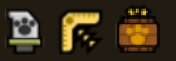- 近战 - Melee
- 爆弹 - Bombs
- 回旋镖 - Boomerangs
*Can be a mix of the above.
Cat Armor
Cat armor is made by first buying the scraps of the armor you want to make from the felyne blacksmith, and then making the armor pieces at the felyne blacksmith by using the scraps.
Fur Color:
Purely for aesthetics and achievement completion.
Personality:
The cat personality will determine one of it's active skills(the one marked with a blue icon).
- 勇敢 - Brave - The Attack Cat. Aggressive cat but has 2 flaws: draws monsters attention too quickly, bad for Great Sword/Hammer users. And secondly, because it draws attention quick, it dies quickly. Uses it's abilities sparingly. Comes with Anger. 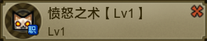
- 爱主人 - Loyal - The Healing Cat. Whenever the hunter gets attacked, Loyal cats will try to attack and draw the attention of the monsters. They are not as aggressive as Brave types, so tend to die less comparatively. Out of the cats, uses it's abilities the most. Comes with Healing Flute Skill. 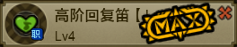
- 坚韧 - Strong - The Defensive Cat. Will draw the attention of the monster heavily. Will only focus on fighting monster. Rarely uses abilities. Comes with Taunt Flute. 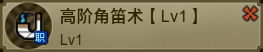
The prefered Personality is usually a loyal cat, since they have a balanced A.I. but it depends on what you intend your cat to do.
The other cat qualities have other personalities not covered here, like smart and pacifist.
Cat Training (In farm)

Weight Training: Increase defense.
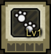Roadwork: Increase vitality.
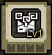Meditation Training: Restores cat stamina. A stamina depleted cat will have it's stats reduced to 10%.

Sandbag Training: Increase attack.

Intimacy Training: Increase intimacy.
At the moment the recommended stat training regime involves dumping all training points into attack for most cats.
Cat Skills
Cat skills for Pink Cats are got either by wasting cash shop tickets on Mysterios lady random shop to get a specific skill book (read:wasting) or by random skill "filtering". If you have your cat equiped(doesn't even need to go hunt with you) it will gain experience and also has a chance to get random skills. Random skills are then to be equiped or discarded to make room for new random skills. Random skills can include both new, unlearned skills and upgrades for currently equipped skills.
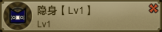
A passive skill that makes the cat not be targeted by the monster. Aditionally, once it is at lvl 4, gives you aditional raw% if you bring your cat to the hunt with you (6.5% at lvl 5).
Support Skills
These skills are only active when the cat is not with you on a hunt, but is equiped.

Increase raw attack by +8 per level. A total of 40 raw at lvl 5. You can buy a yellow gift box from the crazy cat lady skill shop that will give you enough scrolls to level this skill to 4(even works for pink cat) for 10000 silver zenny. Not bad at all.

Increase crit by +4% per level. A total of 20 crit at lvl 5.Becomes better than +raw if you more than 800 raw, and try not to go over 100% crit.
Healing Cat Skills

Active skill that applies a buff that heals you over time.
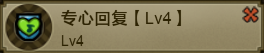Prevents the cat from being interrupted when it's using it's flute. Very useful if you actually count on it for healing you in tight spots.
| Icon | Name | Explanation | |